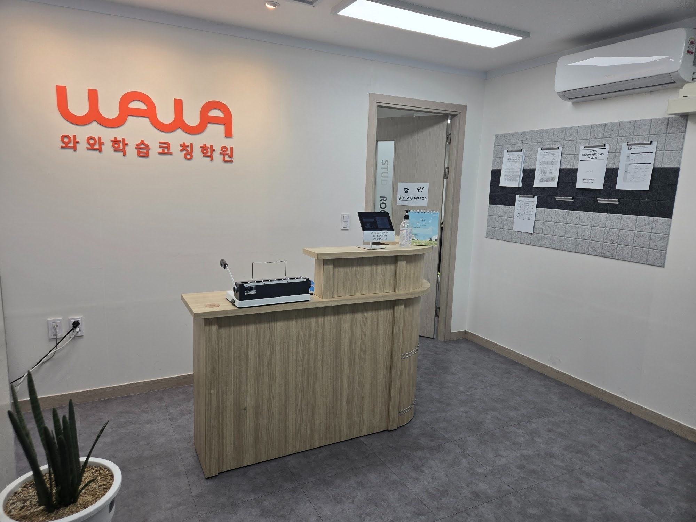
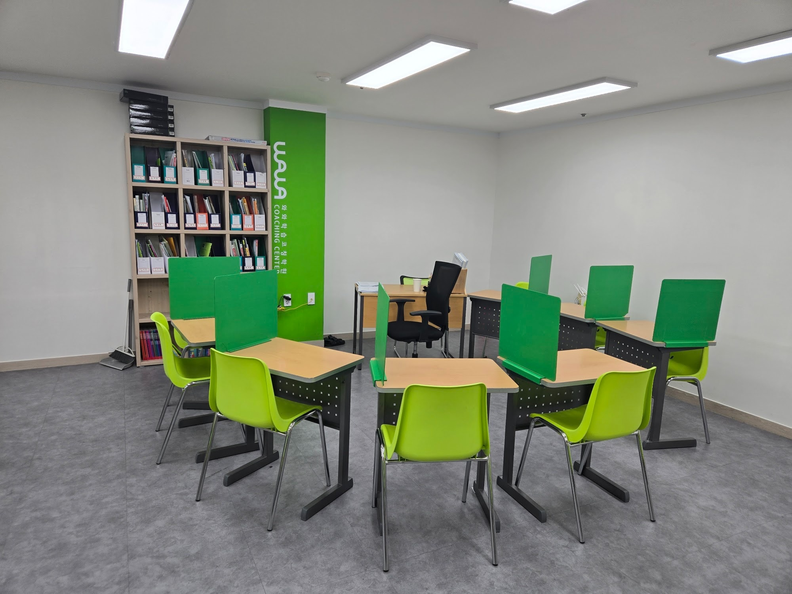
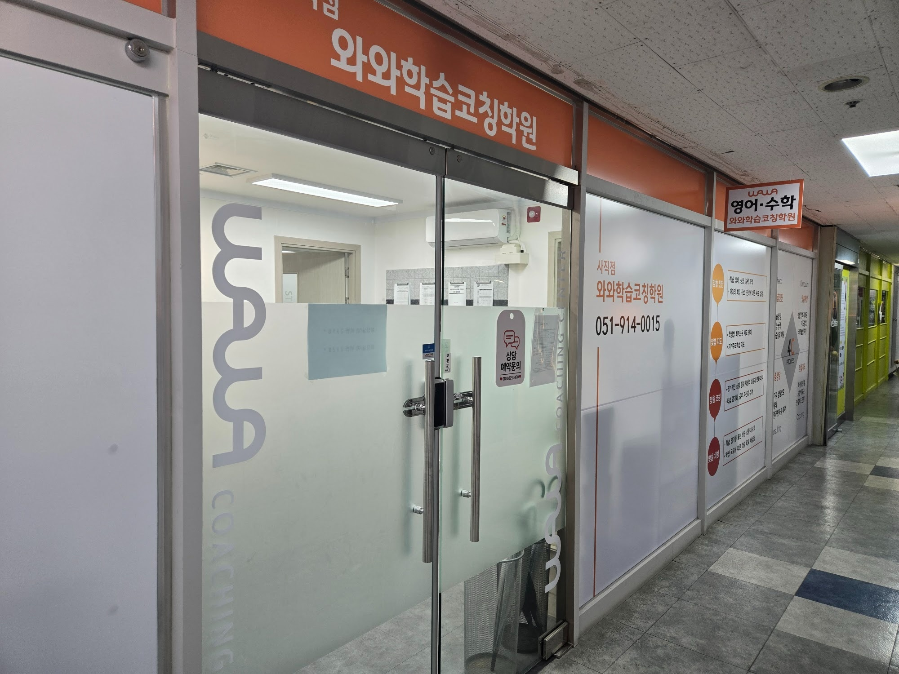

안녕하세요, 부산 동래구 사직동의 와와학습코칭 사직점입니다. 사직로 쌍용예가 아파트 상가에 있는 센터로, 문을 열고 들어오시면 주황색 로고 벽과 이 데스크가 먼저 보입니다.
사진에서 눈여겨봐 주셨으면 하는 곳은 로고가 아니라 데스크 뒤 문입니다. 학습실(STUDY ROOM)로 들어가는 문에 손글씨 종이가 한 장 붙어 있습니다. "잠깐! 출결 확인했나요?" 데스크 위에는 그 확인을 하는 태블릿이 서 있습니다. 사직점의 하루는 이 한 줄에서 시작합니다.
왜 공부보다 출결이 먼저일까요
출결 확인은 사소해 보입니다. 그런데 부모님 쪽에서 보면 가장 먼저 궁금한 것이 바로 이것입니다. "오늘 학원에 제대로 갔나?" 중학생쯤 되면 아이 말만으로는 확인이 어렵고, 매번 전화로 묻기도 부담스럽습니다.
사직점은 이걸 아이의 기억이나 선생님의 눈대중에 맡기지 않습니다. 들어오면 먼저 데스크에서 출결을 남기고 학습실로 들어가는 순서를 문 앞에서부터 정해 두었습니다. 종이를 굳이 문에 붙인 것도 그래서입니다. 급하게 뛰어 들어오는 날에도 문고리를 잡기 전에 한 번은 눈에 걸리게 하려는 것입니다.
출결이 쌓이면 다른 것이 보이기 시작합니다.
- 빠지는 요일이 보입니다. 특정 요일마다 늦거나 빠진다면 그날 일정이 무리하게 짜여 있다는 신호입니다. 성적보다 먼저 일정표를 손봐야 하는 경우입니다.
- 시험 전후의 흐름이 보입니다. 시험이 끝나면 한동안 발길이 뜸해지는 아이가 있습니다. 다음 시험 준비가 늦게 시작되는 이유가 대개 여기 있습니다.
- 상담할 때 이야기가 구체적이 됩니다. "요즘 좀 느슨해진 것 같아요"보다 "지난달 수요일에 세 번 늦었어요"가 훨씬 빨리 해결책으로 이어집니다.

코치 책상은 교실 앞이 아니라 한가운데 있습니다
출결을 남기고 문을 열면 이 학습실입니다. 책상마다 초록 가림판이 세워져 있어 옆자리가 신경 쓰이지 않고, 각자 자기 공부에 들어갈 수 있습니다.
사진을 자세히 보시면 검은 의자가 놓인 코치 책상이 칠판 앞이 아니라 학생 책상들 사이에 있습니다. 앞에서 한 방향으로 설명하는 수업 배치가 아니라는 뜻입니다. 코치가 앉은 자리에서 고개만 돌리면 누가 펜을 멈췄는지, 누가 같은 페이지에 오래 머물러 있는지 보입니다.
이 배치가 특히 도움이 되는 건 질문을 잘 안 하는 아이입니다. 모르는 게 있어도 손을 들지 않고 넘어가는 아이는 생각보다 많습니다. 코치가 가까이 있으면 아이가 부르기 전에 먼저 다가가 "여기서 막혔지?" 하고 물어볼 수 있습니다.
책장 한 칸 한 칸이 아이마다의 기록입니다
학습실 왼쪽 벽의 책장도 보아 주세요. 칸마다 라벨이 붙은 파일 박스가 줄지어 꽂혀 있습니다. 아이들이 쓰는 교재와 풀어 둔 학습지, 오답을 정리한 종이가 이 안에 모입니다.
교재를 집과 학원 사이에 들고 다니다 보면 꼭 생기는 일이 있습니다. "책을 집에 두고 왔어요." 그날 공부는 거기서 틀어집니다. 센터에 자기 칸이 있으면 이런 일이 줄고, 무엇보다 지난주에 뭘 했는지가 한곳에 남습니다.
- 코치는 박스를 열어 지난번에 틀린 문제부터 다시 꺼내 줄 수 있습니다.
- 아이는 두 달 전 자기가 풀던 학습지를 보면서 얼마나 왔는지 눈으로 확인합니다.
- 부모님은 상담 때 말로만 듣는 대신, 실제로 풀어 온 것을 보실 수 있습니다.
문 앞의 출결이 "왔는가"의 기록이라면, 이 책장은 "와서 무엇을 했는가"의 기록입니다. 사직점은 두 가지를 같이 봅니다.
데스크 옆 게시판에는 입시 자료가 붙어 있습니다
첫 사진 오른쪽 벽의 게시판에는 대입 관련 안내 자료가 클립으로 걸려 있습니다. 사직점 주변은 사직중·사직여중에서 사직고·사직여고·동인고로 이어지는 학군이라, 중학생 부모님과도 고등학교 이후 이야기를 일찍 나누게 됩니다.
특히 지금 중학생들은 2022 개정 교육과정으로 고등학교를 다니게 됩니다. 고1 수학이 공통수학1·공통수학2로 나뉘고, 그다음 과목도 대수·미적분Ⅰ·확률과 통계처럼 부모님 세대와 이름이 달라졌습니다. 과목 이름부터 낯설다 보니 "지금 중학교 수학이 고등학교 어디로 이어지느냐"는 질문을 자주 받습니다.
그럴 때 사직점이 드리는 답은 단순합니다. 중학교 방정식·함수에서 빈 곳이 있으면 공통수학1이 무겁습니다. 선행을 얼마나 나갔는지보다, 지금 학년 개념에 구멍이 없는지를 먼저 봅니다. 영어도 마찬가지로 중학교 문법을 문장 단위로 쓸 수 있는지부터 확인합니다.

입구 유리창의 네 단계
센터 입구 유리창에는 와와의 4C 프로세스가 붙어 있습니다. 맞춤 진단 → 맞춤 지도 → 맞춤 코칭 → 맞춤 처방의 네 단계입니다. 앞에서 말씀드린 출결·학습실·파일함은 결국 이 네 단계가 매일 굴러가게 하는 장치입니다.
- 진단 — 처음 오면 영어·수학의 현재 위치를 확인합니다. 학년이 아니라 실제로 비어 있는 단원이 출발점입니다.
- 지도 — 학습실에서 코치가 옆에 앉아 막힌 곳을 짚습니다.
- 코칭 — 정해진 분량을 스스로 해내는지, 공부 방법이 맞는지 봅니다.
- 처방 — 파일함에 쌓인 기록을 보고 다음 계획을 다시 짭니다.
사직점 찾아오시는 길
와와학습코칭 사직점은 부산 동래구 사직로 80, 사직쌍용예가아파트 상가 222동 311호에 있습니다. 아파트 상가 안이라 단지와 인근 사직초·예원초, 사직중·사직여중 쪽에서 아이 혼자 오가기 편한 위치입니다. 복도에서 주황색 간판과 '영어·수학' 돌출 간판을 찾으시면 됩니다.
학습 진단과 상담은 무료입니다. "학원은 다니는데 뭘 하고 오는지 모르겠다"는 마음이 드신다면, 출결 기록과 파일함을 직접 보시면서 이야기를 나눠 보셔도 좋겠습니다.